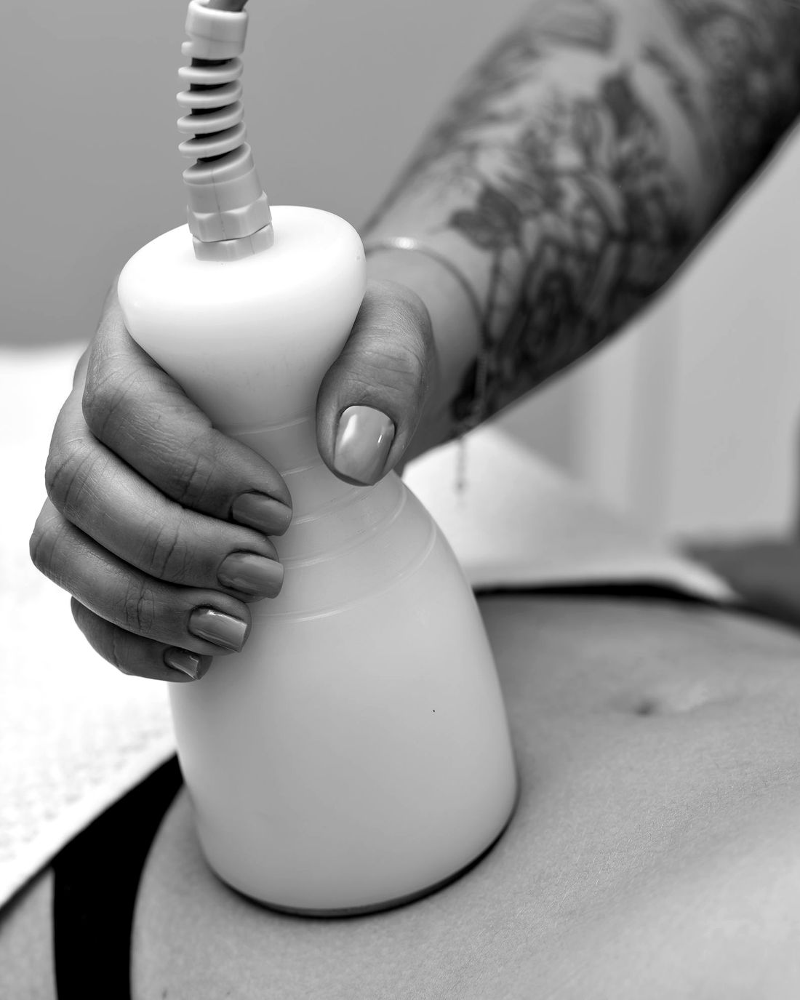
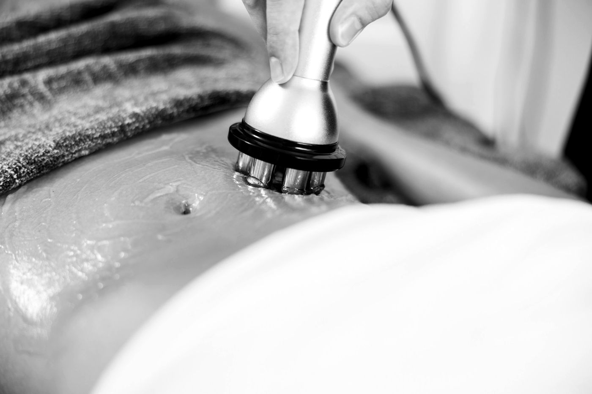

Criolipólisis en Medellín
Elimina la grasa que no se va con dieta ni ejercicio.
Enfriamos la grasa localizada de forma controlada y tu cuerpo la elimina solo. Sin cirugía, sin agujas y sin incapacidad.
- Sin cirugía
- Sin agujas
- Con valoración médica

Si esto te pasa
No es falta de disciplina. Es grasa terca.
Hay grasa que no responde a la dieta ni al ejercicio: se acumula en zonas puntuales, muchas veces por genética.
Haces dieta y ejercicio, y ese rollito sigue ahí.
La ropa ajustada te marca los gorditos de los lados.
Quieres un cambio, pero no quieres cirugía ni incapacidad.
Te da miedo pagar por un tratamiento que no te sirva.
La criolipólisis trata justo esa grasa: la localizada, la que se pellizca.
Quiero mi valoraciónTest de 1 minuto
¿Eres candidata a criolipólisis?
Cinco preguntas de un toque. Al final te decimos qué te conviene, con honestidad.
La decisión final la toma la médica en tu valoración.
Cómo funciona
Lo que hace el frío en tu grasa.
No es una dieta ni un masaje: la criolipólisis elimina células de grasa de la zona tratada, y tu cuerpo hace el resto.
La grasa localizada vive en la capa que está debajo de la piel. Esa es la que forma el “rollito”.
El frío controlado llega a la grasa de la zona. La piel y el músculo quedan protegidos.
Las células de grasa que se enfriaron se apagan y tu cuerpo empieza a retirarlas, de forma natural.
Quedan menos células de grasa en la zona: la capa es más delgada y se nota en tu silueta.
Enfría solo la grasa
Las células de grasa se afectan con el frío antes que la piel o el músculo. Por eso se pueden enfriar sin lastimar lo demás.
La célula de grasa se apaga
No se encoge ni se “derrite”: deja de funcionar y entra en un proceso natural de eliminación.
Tu cuerpo la elimina
En las semanas siguientes tu organismo la retira solo, como hace con cualquier célula que ya cumplió su ciclo.
- 1 a 3sesiones por zona, según tu caso
- 0días de incapacidad: sigues con tu día
- Semana 3empiezas a notar el cambio
- Semana 12ves el resultado completo
Zonas que tratamos
¿Dónde está tu grasa terca?
Toca tu zona y te escribimos con lo que necesitas saber.
-
01
Abdomen
La parte baja del abdomen, la que se marca con el pantalón o el vestido.
Quiero tratar mi abdomen -
02
Cintura y flancos
Los “gorditos” de los lados, que se salen por encima del pantalón.
Quiero tratar mi cintura -
03
Espalda
El pliegue que aparece con el brasier o justo debajo de él.
Quiero tratar mi espalda -
04
Papada
La grasa debajo del mentón que borra el ángulo del cuello.
Quiero tratar mi papada -
05
Brazos
La parte de atrás del brazo, la que se mueve al saludar.
Quiero tratar mis brazos -
06
Muslos
La cara interna, donde se rozan, o la externa (cartucheras).
Quiero tratar mis muslos -
07
Rodillas
La grasa que se acumula justo encima de la rodilla.
Quiero tratar mis rodillas ¿No sabes cuál es la tuya?
Haz el test de 1 minuto y te decimos qué te conviene.
Hacer el test
Paso a paso
Una sesión, y tu vida sigue.
- 1
Valoración médica
La médica revisa la zona, tu historia y si eres candidata. Sales con tu plan por escrito.
- 2
Tu sesión
El aplicador va sobre la zona y enfría la grasa mientras descansas. Al terminar, sigues con tu día.
- 3
Las semanas siguientes
Tu cuerpo elimina las células de grasa. Desde la semana 3 lo notas en la ropa.
- 4
Control
Entre la semana 8 y la 12 medimos el resultado contigo y, si hace falta, planeamos otra sesión.


Por qué en noon
Antes del frío, una médica.
La criolipólisis funciona cuando se indica bien. Por eso en noon no empieza en la máquina: empieza en tu valoración.
- Valoración médica primeroRevisa la zona, tu historia y si eres candidata.
- Tu plan por escritoQué zonas, cuántas sesiones, cada cuánto y qué esperar.
- Te volvemos a verControl entre la semana 8 y la 12 para medir el resultado.
Antes de que preguntes
Lo que todas preguntan.
¿Duele?
Los primeros minutos se siente frío intenso y algo de presión; luego la zona se adormece. La mayoría de las personas lo describe como tolerable. Al retirar el frío puede haber un hormigueo que pasa en pocos minutos.
¿Cuántas sesiones necesito?
Depende de la zona y de cuánta grasa tengas ahí. Muchas personas necesitan entre 1 y 3 sesiones por zona, separadas de 6 a 8 semanas. En tu valoración te decimos cuántas y por qué.
¿Cuándo veo el resultado?
Desde la tercera semana empiezas a notar el cambio, y el resultado completo se ve entre la semana 8 y la 12, cuando tu cuerpo termina de eliminar las células.
¿La grasa vuelve?
Las células de grasa que se eliminan no regresan. Las que quedan sí pueden crecer si subes de peso, por eso el resultado se cuida con tus hábitos.
¿Sirve para bajar de peso?
No. La criolipólisis moldea zonas puntuales; no cambia tu peso en la báscula. Si tu meta es bajar de peso, te orientamos con el manejo médico del peso.
¿Tiene riesgos?
Lo habitual es enrojecimiento, sensibilidad o adormecimiento temporal en la zona. Muy rara vez la grasa de la zona puede reaccionar al revés y aumentar; si pasa, tiene manejo. Por eso la indica y la controla un médico.
¿Quién no se la puede hacer?
No se recomienda en embarazo o lactancia, en personas con enfermedades que reaccionan al frío (como urticaria por frío), con hernias en la zona o con problemas de circulación en el área. Lo revisamos en tu valoración.
¿Puedo combinarla con otros tratamientos?
Sí. Se combina muy bien con radiofrecuencia para mejorar la firmeza de la piel, y con hábitos de alimentación y ejercicio para mantener el resultado.
¿Cuánto cuesta?
Depende de las zonas que quieras tratar y del número de sesiones. El valor se define el día de tu cita de valoración, con tu plan completo por escrito.
noon Clinic · Medellín
Tu primer paso es la valoración.
Te decimos qué se puede lograr en tu zona, cuántas sesiones necesitas y si eres candidata. Sin compromiso de hacerte el tratamiento.
Quiero mi valoraciónLa valoración no se abona al tratamiento y su valor no se devuelve. Términos y condiciones